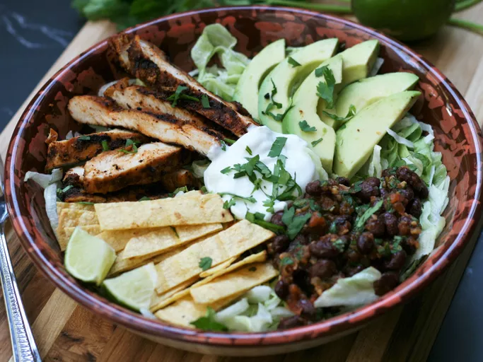

Home
Recipe's

Chicken Taco Salad
This chicken taco salad with spice-rubbed grilled chicken breasts, strips of warm crispy tortilla, and a bean
salsa is the perfect combination of Mexican flavors. Sure to become a favorite!
Ingredients
- (15 ounce) can black beans, rinsed and drained
- ¾ cup medium-hot salsa
- ½ cup chopped fresh cilantro
- tablespoon lime juice
- 2 tablespoons chili powder
- teaspoon ground cumin
- teaspoon ground coriander
- teaspoon brown sugar
- ¼ teaspoon cayenne pepper
- tablespoon olive oil
- pound skinless, boneless chicken breast halves
- 4 (7 inch) corn tortillas
- 4 cups shredded lettuce
- ½ cup chopped fresh cilantro
- avocado - peeled, pitted, and sliced (Optional)
- ¼ cup sour cream (Optional)
- lime, cut into wedges (Optional)
Steps
- Preheat an outdoor grill for medium-high heat and lightly oil the grate.
- Mix black beans, salsa, 1/2 cup cilantro, and lime juice in a bowl; set aside.
- Mix chili powder, cumin, coriander, brown sugar, cayenne pepper, and olive oil in a bowl until smooth; rub mixture over chicken breasts.
- Cook chicken breasts on preheated grill until no longer pink in the center and the juices run clear, 10 to 12 minutes per side. An instant-read thermometer inserted into the center should read at least 165 degrees F (74degrees C). While the chicken is cooking, place tortillas on grill and grill until lightly brown on both sides, 3 to 5 minutes.
- Transfer tortillas to a cutting board and slice into short strips; set aside. Slice chicken into long thin
strips.
- Place lettuce in a salad bowl; top with chicken, tortilla strips, bean salsa, remaining 1/2 cup cilantro, and avocado. Serve with sour cream and lime wedges.